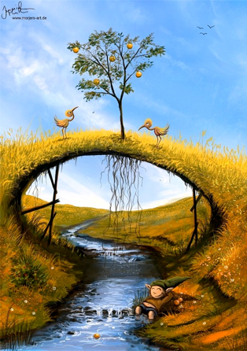

Se trata del sueño lúcido más frecuente y se inicia a partir de un sueño cualquiera en el que de repente somos conscientes de que se trata de un sueño. La mayoría de las veces esto sucede porque percibimos incoherencias en el contenido del sueño: objetos que flotan, familiares junto con amigos de la universidad, entornos surrealistas... La mayoría de vosotros habréis experimentado previamente algún sueño lúcido de este tipo.


DILD (Dream induced lucid dream)
WILD (Wake induced lucid dream)
DEILD (Dream Exit induced lucid dream)
EILD (Electronically induced lucid dream)
En este tipo, entras en el sueño lúcido sin perder la conciencia. Es decir, empiezas despierto y pasas a estar lúcido en un sueño. Requiere mucha perseverancia y dedicación mantener la consciencia mientras te duermes sin embargo la vividez de estos sueños es impresionante. Al parecer Salvador Dalí dominaba este tipo de sueños y los utilizaba como fuente de inspiración para sus pinturas.
Se trata de un subtipo de WILD en el que te despiertas tras un sueño, permaneces inmóvil y vuelves a entrar en otro sueño solo que ahora eres consciente de que es un sueño.
Técnica especialmente útil para enlazar sueños, se acaba uno y empalmas con otro.
Este tipo de sueños lúcidos se deben a la acción de un dispositivo electrónico. Ya sea una grabación que te recuerde que estás soñando, luces que parpadeen y te indiquen la naturaleza del sueño o vibraciones. Entre estos aparatos encontramos máscarás que emiten luces al entrar en REM o cuando se calcula que se está soñando (NovaDreamer, RemDreamer, Remee...), relojes que vibran y otros artilugios.